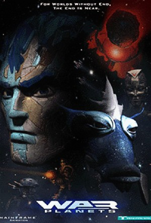

War Planets: Shadow Raiders (1998)
| Year | 1998 |
|---|---|
| Rating | TV-Y7 |
| Status | Completed |
| Seasons | 2 |
| Episodes | 26 |
| Genre | Action, Adventure, Animation, Science Fiction |
At the destruction of Planet Tek at the hands of the planet-consuming Beast planet, Princess Tekla is the sole survivor. In desperation, she reaches a system where four planets named respectively Fire, Bone, Rock and Ice who continually raid each other for the resources that each planet needs. She crash lands on planet Ice where one such raid by the Rock people was confronted by the Ice people. A raiding party from the Beast attacks to silence her, but while they exterminate almost all the combatants, they are beaten back with the help of Graveheart, a miner of the Rock people and King Cryos of Ice. Princess Tekla appoints Graveheart with a massive critical task. Against all odds, he must build an alliance among the worlds to face the horror that is to come.
Episodes
| # | Title | Air Date | Synopsis |
|---|---|---|---|
| 1 | Behold the Beast | 1998-09-16 | When the sole survivor of a destroyed world escapes to another galaxy where feuding races have existed for ages, a common miner named Graveheart rises to the occasion, helping to form an alliance that will be essential t |
| 2 | On the Rocks | 1998-09-23 | The Alliance approaches Lord Mantel of Rock and Graveheart is jailed for treason, but Jade, a military soldier and friend to Graveheart is skeptical of the truth, and helps him escape to fight off a Beast attack. |
| 3 | Born in Fire | 1998-09-30 | Graveheart and Cryos must undergo a torturous Trial by Fire to win Alliance support from young Prince Pyrus and planet Fire. |
| 4 | Bad to the Bone | 1998-10-07 | Conniving Emperor Femur of Bone tries to play the Alliance against a deal with Lamprey of the Beast Planet, but his two faced actions nearly destroy his world until Graveheart and the Alliance step in. |
| 5 | Wolf in the Fold | 1998-10-14 | Lamprey posses Tekla's body and uses her to try and assassinate Graveheart and destroy the Alliance. |
| 6 | Mind War | 1998-10-21 | Graveheart stands by helpless, while Tekla fights Lamprey for control of her own body, in the battlefield of her mind. |
| 7 | J'Accuse | 1998-10-28 | When Jade is wrongly accused of murder, She and Graveheart have 24 hours to prove her innocence with the fate of the Alliance resting in the balance. |
| 8 | Blood is Thicker... | 1998-11-04 | While Graveheart and the Alliance fend off another Beast Drone attack, Cryos' daughter is taken hostage and the King must choose between his daughter and his people. |
| 9 | Rock and Ruin | 1998-11-11 | With Graveheart exiled, Jade returns to Rock alone to make one last attempt to bring Lord Mantel and Planet Rock into the Alliance. |
| 10 | Against all Odds | 1998-11-18 | Prince Pyrus and the Lady Zera crash-land on Beast Drone occupied Remora and are forced to fend for themselves with no way to contact the Alliance. |
| 11 | Uneasy Hangs the Head | 1998-11-25 | Graveheart prepares the Alliance for the final battle against Remora while Femur makes plans of his own. |
| 12 | RagnaRok: Part One | 1998-12-02 | As the battle against Remora rages, Graveheart fears the worst, until Planet Rock's last minute decision changes the odds. |
| 13 | RagnaRok: Part Two | 1998-12-09 | With the Four Worlds finally united, the Beast Planet's approach threatens to destroy them all. |
| # | Title | Air Date | Synopsis |
|---|---|---|---|
| 1 | Worlds within Worlds | 1999-03-31 | As the Beast Planet prepares to destroy the Alliance, Graveheart and Tekla scramble to find the hidden secret which will enable them to defend their worlds. |
| 2 | This is the way the World Ends... | 1999-04-07 | The Alliance lives to fight another day, but at a great sacrifice. |
| 3 | Period of Adjustment | 1999-04-14 | Femur pleads with the world leaders to allow planet Bone back into the Alliance. |
| 4 | Blaze of Glory | 1999-04-21 | Refugee's from planet Fire take control of Rock's battlemoon and Graveheart and Pyrus must reach them before it's too late. |
| 5 | SandStorm | 1999-04-28 | Fleeing from the Beast Planet, Graveheart and the Alliance encounter a new civilization. |
| 6 | Night on the Town | 1999-05-05 | Several Alliance members take advantage of a rare moment of peace which does not last as long as they had hoped. |
| 7 | Time Bomb | 1999-05-12 | Graveheart and the Alliance discover an uninhabited jungle planet which has a dangerous secret of its own. |
| 8 | Embers of the Past | 1999-05-19 | When Planet Fire reappears, Pyrus must face his damaged home-world which has seemingly escaped the Beast Planet. |
| 9 | Divided We Stand | 1999-05-26 | Graveheart and the Alliance discover a rogue planetoid that may hold the secret to destroying the Beast planet, but at what cost. |
| 10 | Nor Iron Bars a Cage | 1999-06-02 | Graveheart, Cryos, Jade, and Femur are separately captured by warring bands, while on the Prison Planet, and fight to escape as the Beast Planet draws near. |
| 11 | Death of a King | 1999-06-09 | Battles rage as Graveheart and company fight for control on the Prison Planet, while Lord Mantel faces off against the Beast Planet's Mightiest Warrior. |
| 12 | The Long Road Home | 1999-06-16 | Sternum of the Prison Planet must make an extreme sacrifice to save his world and the Alliance as they face off against the Beast Planet. |
| 13 | Ascension | 1999-06-23 | As Planet Rock searches for a new king, Graveheart faces off against Blokk in what will be the final battle for one warrior. |